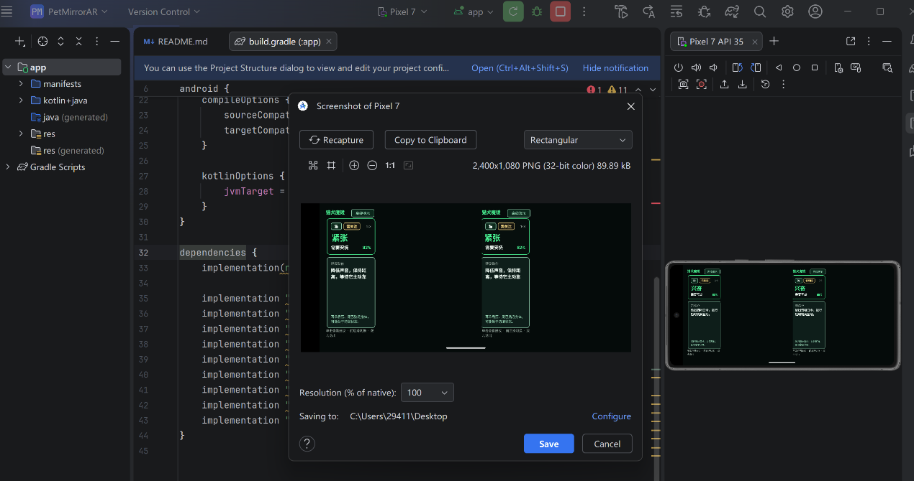

ANDROID STUDIO → BROWSER REPLAY
先有 Android 双目原型
再用网页回放交互
赛期在 Android Studio 中搭建眼镜端显示界面，并在 Pixel 7 模拟器运行。左右眼同步显示状态和建议，镜腿操作可切换内容；下方网页将这套交互变成可直接体验的回放。
网页画面使用 AI 生成的场景图和虚构的预录提示，不是眼镜真机采集画面。
Android Studio · Pixel 7 模拟器赛期开发截图

浏览器双目回放食盆旁犹豫1 / 3
左眼
示例猫 A · 离线演示食盆旁犹豫少打扰，再观察
右眼
示例猫 A · 离线演示食盆旁犹豫少打扰，再观察
左侧低遮挡区域状态短语 ＋ 行动建议文字随场景同步切换
INTERACTION
切换演示场景
“前滑／后滑”对应 Android 原型中的镜腿切换；也可开启自动轮播。
观察到靠近食盆但进食不积极；单次画面只适合给保守提醒。
SOURCE CODE
网页背后的 Android 工程
MainActivity.kt ↗ 使用双目绑定更新提示，并处理镜腿点击与前后滑动。PetStatusRemoteDataSource.kt ↗ 读取后端的状态短句与行动建议。模拟器截图对应的是显示端开发记录。